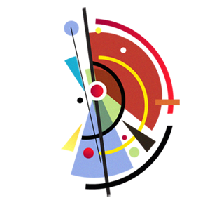

<p>Ph.D at Inria, PANAMA Research Group</p>

<div class="row">
	<div class="column">
		
	</div>
	<div class="column">
		&nbsp;
	</div>
	<div class="column">
		<h2>Contact</h2>
		Address:<br>
		&nbsp; Diego Di Carlo<br>
		&nbsp; Office C301<br>
		&nbsp; INRIA Rennes<br>
		&nbsp; Campus de Beaulieu<br>
		&nbsp; 263 Avenue Général Leclerc<br>
		&nbsp; 35042 Rennes, Francia<br>
	</div>
</div>

&nbsp;
<h3>Email:</h3>
<p>diego#dot#di-carlo#at#inria.fr</p>


<!-- 
{% for post in paginator.posts %}

<article class="post">
	
		{% if post.external-url %}
			<h1>
				<a class="anchor" href="{{ post.url }}"><i class="icon-anchor"></i></a>
				<a href="{{ post.external-url }}">{{ post.title }}</a>
			</h1>
		{% else %}
			<h1><a href="{{ post.url }}">{{ post.title }}</a></h1>
		{% endif %}

		<div class="post-content">{{ post.content }}</div>

	</article>

{% endfor %}


{% if paginator.total_pages > 1 %}
	<div class="postnavigation">

		{% if paginator.previous_page %}
			{% if paginator.page == 2 %}
				<a class="prev left" href="/">&larr; Newer</a>
			{% else %}
				<a class="prev left" href="/page{{paginator.previous_page}}/">&larr; Newer</a>
			{% endif %}
		{% else %}
			<span class="nope left">&larr; Newer</span>
		{% endif %}

		<span class="pages">Page {{ paginator.page }} of {{ paginator.total_pages }}</span>

		{% if paginator.next_page %}
			<a class="next right" href="/page{{paginator.next_page}}/">Older &rarr;</a>
		{% else %}
			<span class="nope right">Older &rarr;</span>
		{% endif %}

	</div>
{% endif %} -->